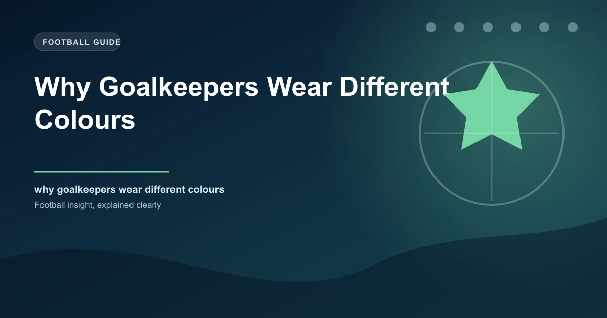

Watch any professional football match and the first thing you will notice about the goalkeeper is that they look nothing like their teammates. While the 10 outfield players wear matching shirts, shorts, and socks, the goalkeeper stands apart in a completely different colour. This is not a marketing decision. It is not a fashion statement. It is a rule that has been written into the Laws of the Game for over 130 years.
The reason goalkeepers wear different colours is rooted in the earliest days of organized football, when referees could not tell the players apart, and the solution was to make the one player who could handle the ball visually distinct from everyone else on the pitch.
In the early 1880s, football matches did not have numbered shirts. Every player on a team wore the same colour, and referees had to identify players by their position and physique. This worked reasonably well when matches were local affairs with small crowds, but as football grew in popularity and matches drew larger attendances, the problem became acute.
The critical issue was the goalkeeper. In the original rules of football, the goalkeeper was the only player allowed to handle the ball with their hands. This gave them a unique role, but it also created a problem for referees. When a foul was committed, or a free kick was awarded, the referee needed to identify which player was involved. In a crowd of players wearing identical shirts, distinguishing the goalkeeper from an outfield player was difficult, especially from a distance.
In 1891, the Football Association addressed this problem by introducing a simple solution: the goalkeeper must wear a different colour from the rest of their team and from the opposing team. The rule was added to Law 4 (The Players' Equipment) and has remained there ever since. The original wording stated that the goalkeeper "shall wear a different coloured jersey from that of either team and from the referee."
You might wonder why this rule has survived for over 130 years when so many other football regulations have been revised, updated, or abolished. The answer is that the underlying reason for the rule has never disappeared. Even with modern technology, goal-line technology, VAR, and high-definition cameras, the basic visual distinction between a goalkeeper and outfield players remains essential for the smooth running of the game.
Consider what happens during a corner kick. Twenty players are packed into a small area near the goal. The goalkeeper is usually in the middle of the crowd, preparing to claim or punch the ball. Without a distinct colour, the referee would struggle to track the goalkeeper's movements, particularly regarding whether they are handling the ball legally or being fouled by attacking players.
The rule also serves the spectators. Whether watching in the stadium or on television, the different colour allows fans to instantly identify the goalkeeper. This is not a trivial concern. In a sport that moves at high speed, with 22 players on the pitch, visual clarity matters. The goalkeeper's distinct colour is a simple but effective tool for making the game more comprehensible.
The different colour is not the only way goalkeepers are distinguished from outfield players. Law 4 of the Laws of the Game gives goalkeepers specific privileges and restrictions that no other player has:
Handle the ball — Within their own penalty area, goalkeepers may use their hands to play the ball. This is the most fundamental difference between a goalkeeper and every other player.
Wear protective equipment — Goalkeepers may wear gloves, head guards, and padded clothing. Outfield players are restricted in what protective gear they can wear.
Substitution rules — If a goalkeeper is sent off and the team has no remaining substitutions, an outfield player must take over the goalkeeper position and wear the goalkeeper's distinct colour.
The restriction on colour is specifically designed to prevent confusion. If a goalkeeper were allowed to wear the same colour as their teammates, referees would face the same identification problem that existed before 1891. The different colour is the simplest, most reliable way to ensure the goalkeeper is always identifiable.
In the early decades of the rule, goalkeeper colours were typically limited. Yellow, green, and black were the most common choices. The reasons were practical: these colours were the most visually distinct from the red, blue, and white shirts that most teams wore. Goalkeepers did not have the wide range of colours and designs that they enjoy today.
The modern era of goalkeeper kit design began in the 1990s, when manufacturers like Adidas, Nike, and Umbro began producing specialised goalkeeper jerseys with bold, distinctive patterns. The introduction of fluorescent colours — bright yellow, neon green, orange — was driven by both practical and commercial motivations. Brighter colours made goalkeepers even more visible, while the unique designs created new revenue streams through shirt sales.
Today, goalkeeper kits are among the most distinctive in football. Peter Schmeichel's famous green and black patterned shirt at Manchester United. Gianluigi Buffon's neon yellow Juventus jersey. Manuel Neer's bright green Bayern Munich kit. These shirts are as iconic as any outfield player's kit, and they owe their existence to a rule written in 1891.
| Era | Common Goalkeeper Colours | Reason |
|---|---|---|
| 1891-1950s | Green, black, yellow | Most distinct from common outfield shirt colours |
| 1960s-1980s | Green, yellow, white, black | Expanded options as kits became more varied |
| 1990s-present | Neon yellow, orange, pink, blue, patterned | Commercial design + enhanced visibility |
The rule about goalkeeper colours creates occasional complications when two teams have similar colours, or when the goalkeeper's distinct colour is too close to the referee's colour. In these situations, the referee has the authority to require the goalkeeper to change their shirt colour before the match begins.
This has happened at the highest level. In a 2005 Champions League match between Villarreal and Arsenal, Villarreal's goalkeeper was required to change from a yellow shirt to a blue shirt because it was too similar to Arsenal's yellow away kit. The incident highlighted the importance of the rule and the referee's authority to enforce it.
UEFA and FIFA have detailed regulations about colour clashes. Before each match, the referee inspects both teams' kits and determines whether any player's shirt colour is too similar to an opponent's or the opposing goalkeeper's. If a clash is identified, the team must change to an alternative kit. The goalkeeper's distinct colour is always given priority in these assessments.
In the 2014 World Cup, Cameroon wore a green kit that was deemed too similar to Mexico's green goalkeeper jersey. Cameroon was forced to change to their red away kit before the match. The goalkeeper rule was the direct cause of this last-minute change.
Some researchers have explored whether a goalkeeper's shirt colour affects the behaviour of opposing strikers. A study published in the Journal of Sports Sciences in 2012 found that goalkeepers wearing red or orange shirts conceded slightly fewer penalties than those wearing blue or green. The theory is that brighter colours may subconsciously draw the referee's attention to the goalkeeper, making fouls against them more likely to be penalised.
Another study, conducted by researchers at the University of Chichester in 2013, found that strikers were marginally less accurate when shooting against goalkeepers wearing high-visibility colours. The researchers suggested that the bright colour created a visual distraction that affected the striker's ability to focus on the goal.
These findings are tentative and based on small sample sizes, but they suggest that the goalkeeper's different colour may do more than satisfy a rule from 1891. It may actually influence the dynamics of the game in subtle but measurable ways.
Goalkeepers wear different colours because a rule written in 1891 required it, and because the underlying reason for that rule — visual identification for referees, players, and spectators — remains as valid today as it was 135 years ago. The rule is one of the oldest in football, and it is one of the few that has never been substantially modified.
Every time a goalkeeper steps onto the pitch in a bright yellow, neon green, or bold orange shirt, they are fulfilling a tradition that stretches back to the very origins of organized football. The different colour is not just a rule. It is a visual language that makes the game more understandable for everyone who watches it.
Check our free daily football predictions for every match of the season.
Generate optimized accumulator combinations from today's AI-powered predictions. Set your target odds and get instant ticket suggestions.
Pro Ticket Builder →